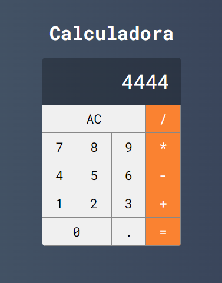
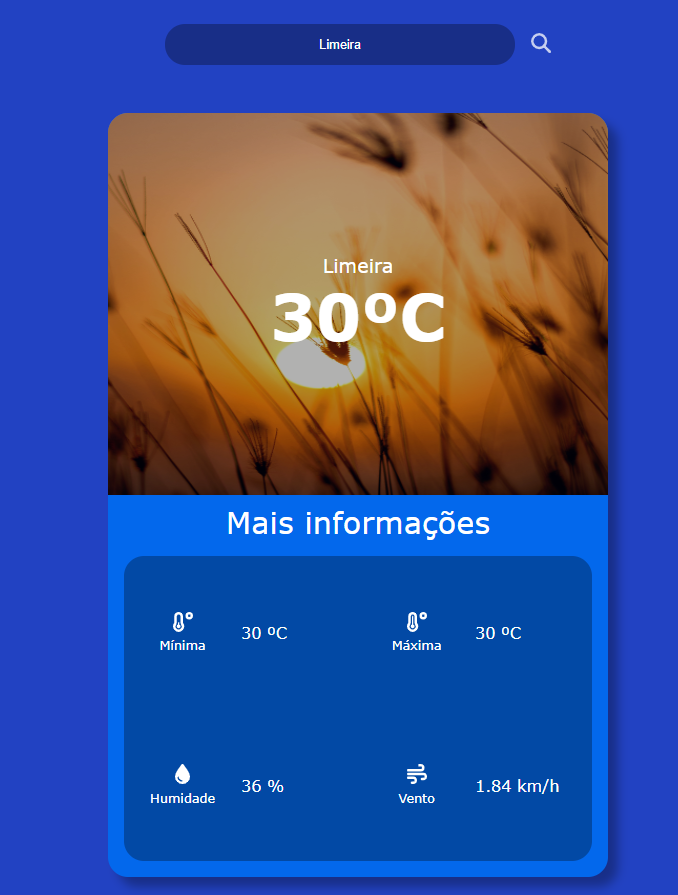
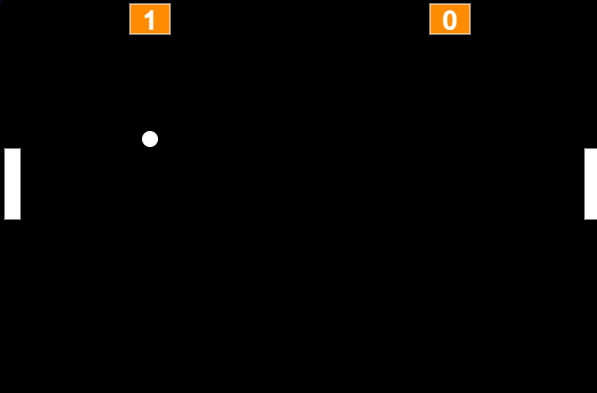

Este projeto foi desenvolvido utilizando React e JavaScript, e envolve a criação de uma calculadora. É um projeto ideal para todo desenvolvedor iniciante, pois oferece uma excelente oportunidade para praticar e aprimorar habilidades fundamentais. Criar uma calculadora permite explorar conceitos essenciais como estados, componentes, e manipulação de eventos em React, além de fortalecer a lógica de programação e a compreensão de JavaScript.
Projeto consiste em uma aplicação web desenvolvida em Angular, TypeScript e SCSS para fornecer previsões meteorológicas utilizando a API OpenWeatherMap. Os usuários podem pesquisar e visualizar previsões detalhadas para diferentes localidades, com atualizações em tempo real. A interface é intuitiva e responsiva, proporcionando uma experiência de usuário fluida em dispositivos de todos os tamanhos. O projeto visa aprofundar conhecimentos nessas tecnologias, praticar integração de APIs externas e explorar conceitos avançados de gerenciamento de estado em aplicações Angular.
O projeto é uma recriação do clássico jogo Pong, desenvolvido utilizando JavaScript, CSS e HTML. Este projeto oferece uma experiência nostálgica, trazendo o icônico jogo de arcade para a web. Foi projetado para rodar suavemente em navegadores modernos, proporcionando uma jogabilidade fluida e responsiva. Além de ser uma divertida atividade de programação, este projeto também serve como uma excelente oportunidade para praticar e aprimorar habilidades em JavaScript, CSS e HTML, incluindo manipulação de DOM e lógica de jogo.
